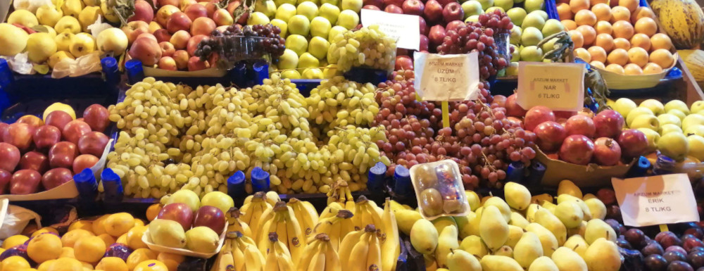

Ask yourself what are the fruits of your life
Au milieu de ce tourbillon du monde, empresse-toi de cueillir quelques fruits. Assieds-toi sur le trône de la gaieté et approche la coupe de tes lèvres. Dieu est insouciant et de culte et de péché : jouis donc ici-bas de ce qui t’agrée. Omar Khayyam